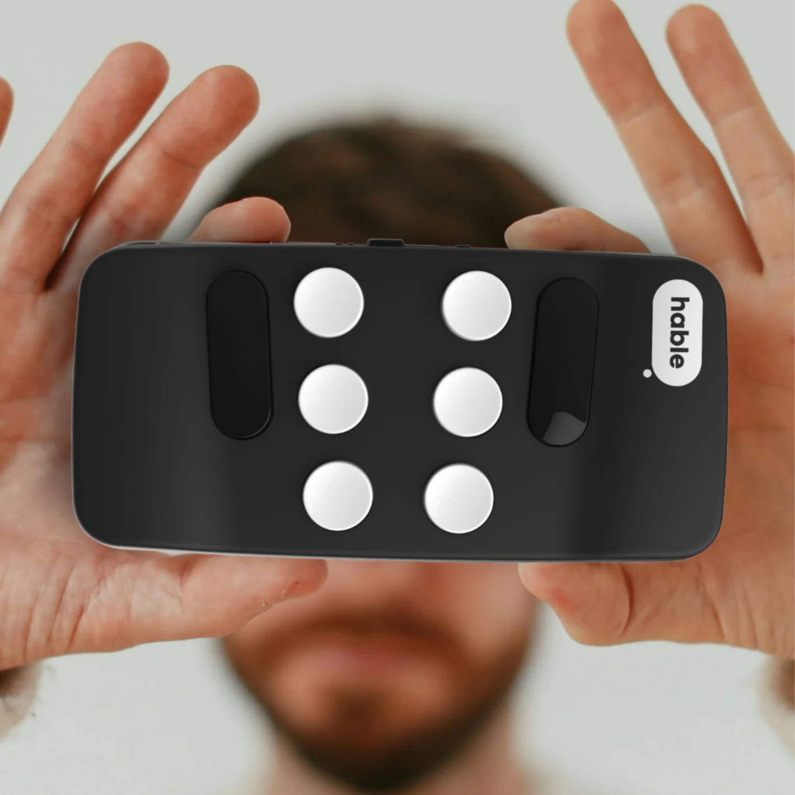

Importancia
El teclado Hable ONE es un dispositivo crucial para personas con discapacidad visual.
Permite escribir y leer en Braille, lo cual fomenta la inclusión en la educación, el empleo y el uso de la tecnología además de la comunicación y el acceso a la información de manera independiente.
Uno de los teclados braille más recientes y destacados en 2024 es el Hable One, diseñado específicamente para usuarios ciegos o con discapacidad visual. Este dispositivo se caracteriza por ser compacto y portátil, lo que permite su uso en cualquier lugar. Se conecta a smartphones y tabletas a través de Bluetooth, ofreciendo la posibilidad de escribir en braille y controlar funciones del dispositivo sin necesidad de tocar la pantalla. Esto lo convierte en una herramienta versátil y fácil de usar para la navegación diaria y la escritura de textos en dispositivos móviles.
Hable One utiliza un sistema de seis botones braille que permite combinar teclas para formar caracteres. Es compatible tanto con dispositivos Android como iOS y tiene una duración de batería de hasta un mes. Este teclado no solo mejora la accesibilidad, sino que también ofrece control sobre los lectores de pantalla, como VoiceOver o TalkBack, facilitando la interacción con la tecnología de manera autónoma y discreta.
Evolución de los teclados en Braille
Teclados en Braille electrónicos
Con el avance de la tecnología, los teclados en Braille comenzaron a integrarse en dispositivos electrónicos, como computadoras y teléfonos móviles. Esta evolución permitió a las personas con discapacidad visual acceder no solo a la escritura, sino también a la lectura de contenido digital.
Notetakers Braille: Estos dispositivos combinan un teclado Braille con una pantalla de celdas Braille actualizables, permitiendo leer y escribir documentos, navegar por internet y acceder a aplicaciones. Los notetakers Braille son útiles para estudiantes y profesionales, ya que facilitan la creación de documentos digitales y la lectura de libros en formato Braille.
Displays Braille: Son pantallas táctiles que muestran información en Braille y se conectan a computadoras o teléfonos. Los displays Braille convierten el texto de la pantalla en caracteres Braille actualizables, permitiendo a los usuarios "leer" la pantalla táctil mediante el tacto. Esto mejoró enormemente la accesibilidad, especialmente para la navegación por internet y el uso de aplicaciones.
Teclados en Braille modernos
Los teclados en Braille han evolucionado para ofrecer funciones avanzadas y mayor compatibilidad con dispositivos modernos. Hoy en día, un teclado en Braille electrónico (como es el Hable ONE) puede conectarse a computadoras, tabletas y teléfonos inteligentes mediante Bluetooth o USB. Estas características han permitido:
Conectividad multiplataforma: Los teclados en Braille pueden usarse con distintos sistemas operativos, lo que facilita su integración en entornos educativos y laborales.
Funciones adicionales: Además de la escritura, muchos dispositivos incorporan funciones como lectura de pantalla, acceso a herramientas de edición y gestión de archivos, y soporte para aplicaciones específicas.
Futuro de la evolución del Braille digital
El desarrollo de tecnologías táctiles y hápticas continúa avanzando, y se espera que en el futuro existan dispositivos más accesibles, económicos y fáciles de usar. Las innovaciones en interfaces hápticas están mejorando las pantallas de Braille actualizables, haciéndolas más compactas y de mayor resolución. Además, se trabaja en la integración de inteligencia artificial para mejorar la precisión en la conversión de texto a Braille y viceversa.
Características y Beneficios
Características
- Fabricado con plástico reciclado.
- Batería interna de ion-litio (3,7V) de larga duración, carga completa en dos horas a través de USB o transformador de corriente eléctrica.
- Pesa 90 g y mide 100 x 46 x 8 mm.
- Viene con el cable USB-C para carga y actualizaciones de software.
- También le acompaña una correa de cordón para sujetarlo a la muñeca.
Beneficios
- Acceso más rápido y eficiente
El teclado Hable One facilita la escritura rápida mediante el uso de seis teclas principales, siguiendo el sistema de puntos braille. Esto permite a los usuarios escribir y navegar por sus dispositivos sin necesidad de usar la pantalla táctil, lo cual puede ser más lento y menos preciso.
- Portabilidad y comodidad
Es pequeño y ligero, lo que lo convierte en una herramienta fácil de llevar. Los usuarios pueden escribir o controlar sus dispositivos móviles sin necesidad de estar frente a una mesa o usar un teclado completo, permitiendo su uso en movimiento.
- Navegación completa del dispositivo
Permite controlar todas las funciones del dispositivo, como enviar mensajes, realizar llamadas, abrir aplicaciones y navegar por la web. Esto proporciona una mayor independencia al usuario, ya que no necesita depender de otras personas para manejar su teléfono o tableta.
- Compatibilidad con múltiples dispositivos
Funciona con teléfonos y tabletas tanto iOS como Android. Esto lo convierte en una herramienta versátil, ya que los usuarios pueden cambiar entre dispositivos sin problemas.
- Facilidad de aprendizaje
Aunque utiliza el braille para la entrada de texto, no es necesario ser un experto en braille para aprender a usarlo. El teclado ofrece una curva de aprendizaje amigable y permite a los nuevos usuarios familiarizarse con los comandos rápidamente.
- Diseño intuitivo y ergonómico
El diseño de las teclas está pensado para ser fácil de localizar y usar con los dedos, lo que reduce la fatiga y hace que sea cómodo incluso para sesiones largas de uso..
- Mayor privacidad
La posibilidad de escribir sin mirar el dispositivo proporciona una mayor privacidad en espacios públicos, ya que los usuarios no tienen que dictar en voz alta o usar la pantalla táctil, evitando que otros puedan ver lo que están escribiendo.